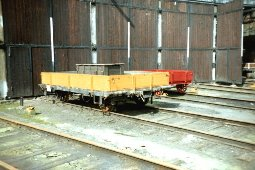
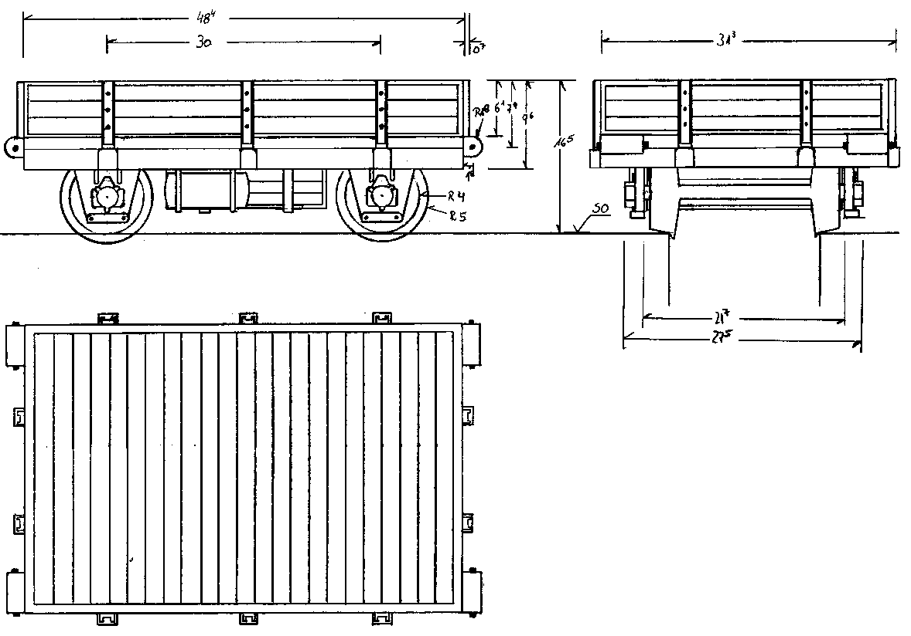

Krümelbahn
Krümelbahn Kla01
Kla01
 Kla 01-0723
Kla 01-0723
Kla 01-0723 im Eisenbahnmuseum Bochum-Dahlhausen [29-3-89]

Allgemeine Informationen
Zur Unterhaltung der Gleisanlagen und zum Transport von Baumaterial dient der DB und vielen Museumsbahnen der schwere Rottenkraftwagen Klv51. Zur Erweiterung von Transportkapazitäten wurden dem Klv51 Anhänger vom Typ Kla01 angehangen.Nachdem das Brawa-Modell (Brawa 458) des Kla01 nicht mehr zu erhalten war, entschloss ich mich zu einem Nachbau.

;){kind=link}
Technische Daten
| Maße in H0 | ||
|---|---|---|
| Leergewicht | t | |
| Spurweite | 1435mm | 16,5mm |
| Achsanordnung | 2 | |
| Länge über Kupplung | 4500mm | 51,7mm |
| Raddurchmesser | 600mm | 6,9mm |
| Achsstand | 2500mm | 28,7mm |
| Ladefläche | 11,5m2 | |
Literaturhinweise
Eine interessante Beschreibung von Draisinenfahrzeugen ist zu finden in:-
John, Stefan: Vom Schienenfahrrad zum Turmtriebwagen
- eine Beschreibung der Deutschen Draisinen Sammlung
Eisenbahnfreunde Wetterau e.V.
| Links |
|---|
Industriemodelle/Bausätze
Kla01| Hersteller | Epoche | H0 | TT | N | Bemerkungen |
|---|---|---|---|---|---|
| Weinert | III | 4608 | |||
| IV | 4606 |
| Hersteller | Epoche | H0 | TT | N | Bemerkungen |
|---|---|---|---|---|---|
| Weinert | III | 4607 4625 |
mit Steinbockkran |
||
| IV | 4605 4627 4626 |
mit Atlaskran mit Steinbockkran |
Bauteilliste
| Benennung | Techn.Daten |
|---|---|
| Messingplatte | 0,5mm |
| Messingprofil | Rechteck 2*1mm |
| Messingprofil | I-Form 2*1mm |
| Messingprofil | U-Form 2*1mm |
| Messingprofil | Rundstab 0,5mm, 2mm |
| 1 Rockinger-LKW-Kupplung | Weinert 4351 (2er Pack) |
Baubeschreibung
 Kla01
Kla01;){kind=link}
 Kla01
Kla01 - Detailzeichnung
Kla01
Kla01 - Detailzeichnung;){kind=link}

Kla01 - Detailzeichnung
in Betrieb seit: 05.1990
Das Modell des Kla01 wurde komplett aus Messingteilen aufgebaut.
Unter eine Messingplatte wurde ein Rahmen aus dem Rechteck-Messingprofil gelötet. An diesen Rahmen wurden angebracht:
- an die Längsseiten je 3 Halterungen für die abnehmbaren Bordwände aus U-Profil
- an die Querseiten je 2 Halterungen für die abnehmbaren Bordwände aus U-Profil
- an die Längsseiten je 1 Trittstufe
- an die Querseiten je 2 Puffer aus halbiertem Rundmessing (2mm)
- an eine Querseite die Rockingerkupplung
- an die andere Querseite die Kupplungsdeichsel
Dieses Modell ist leicht aufzuwerten, indem:
- das Modell komplett neu lackiert wird (vorher ist die alte Lackierung leider mühsam zu entfernen)
- der Bleiblock und die Milchglashaube entfernt und die Fensteröffnungen mit Plexiglasscheiben verschlossen werden
- ein Scheibenwischer (Weinert 9230) an die Frontscheibe montiert wird
- der Ladekran gegen ein neues Modell (Weinert 4433) ausgetauscht wird
- am Ende des Fahrzeuges eine Rockinger-LKW-Kupplung (Weinert 4351) angebracht wird
- an den Fahrzeugseiten Trittstufen aus Messingblech angebracht werden